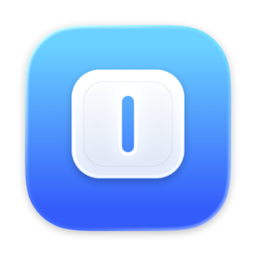
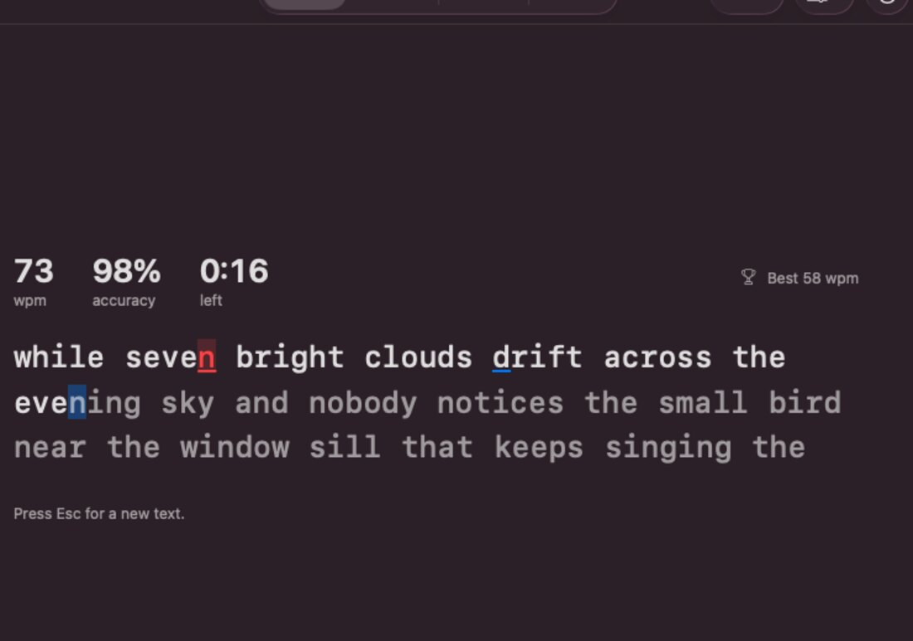
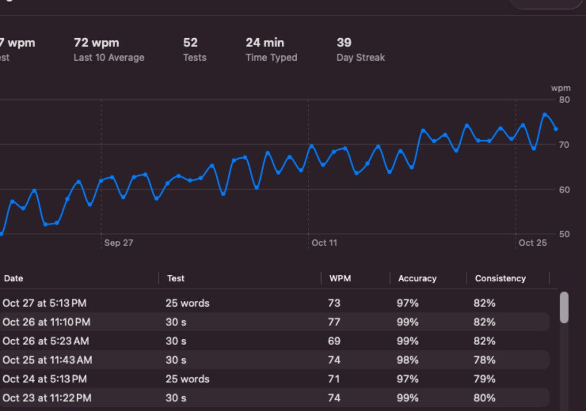
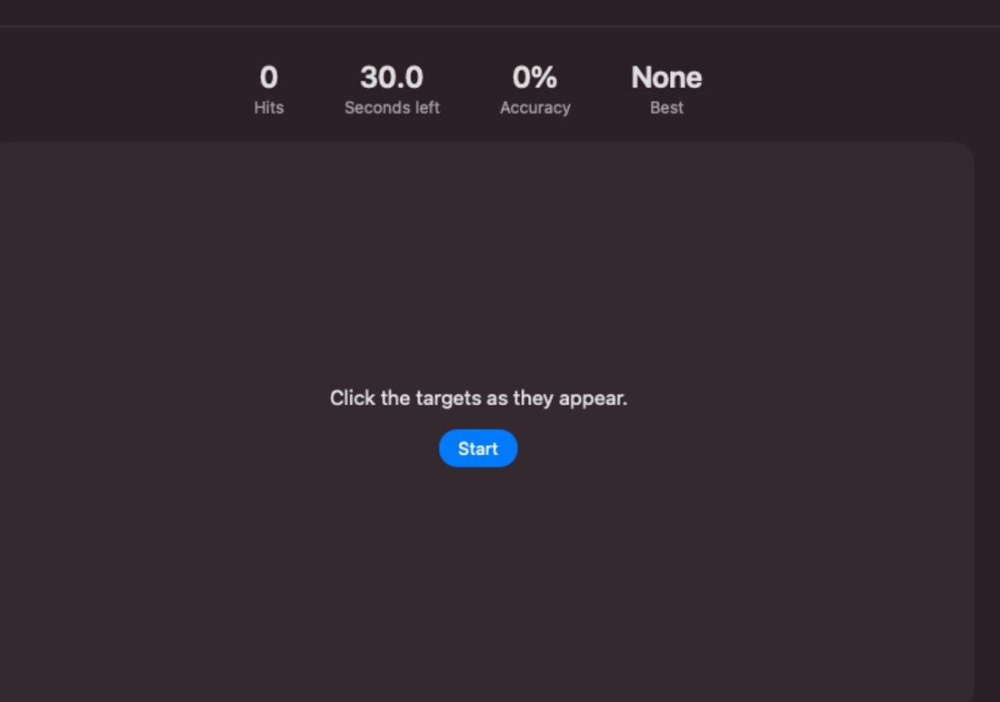
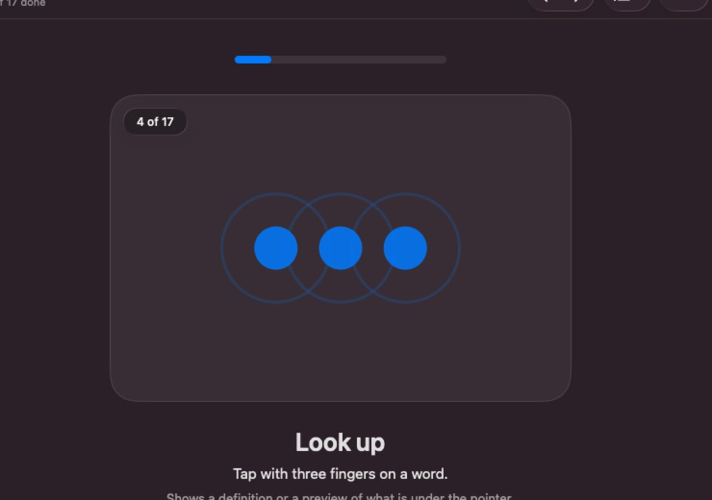
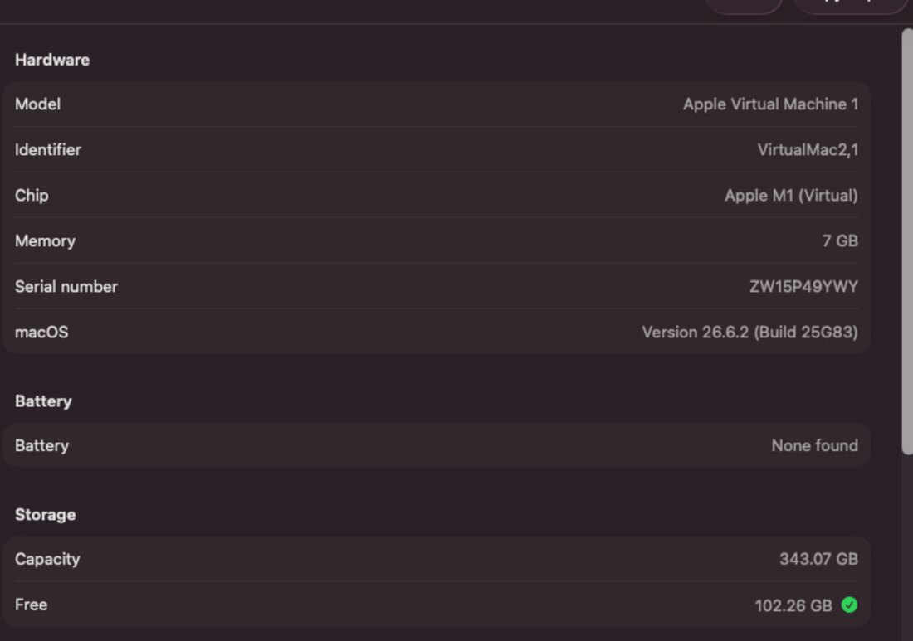

Projects / Fluent

Fluent
Fluent is a Mac app for typing practice, click and aim tests, trackpad gestures and shortcuts, and for checking a used Mac before you buy it. It is free and open source, and it needs macOS 26 or later.
Typing
The test finds the keys you are bad at and gives you drills for them.
- Progress: speed and accuracy over time.
- Weak keys: keys you miss or hit slowly get a drill of their own.
- Ghost run: race a ghost of your best run.
- Practice: time, words, phrases or your own text.

Progress
Every test is saved on your Mac, with a chart of your speed.
- Key map: shows which keys are fast and which hold you back.
- Your time: run a test for as long as you want.

Tests
Quick tests for clicking, reflexes and aim, plus a check for your mouse and keyboard.
- Click speed: how many clicks fit in a few seconds.
- Reaction: how fast you click when the box turns green.
- Aim: how accurately and quickly you hit targets.
- Mouse and keyboard: check every button, the wheel and which keys register.

Gestures and shortcuts
Fluent goes through the gestures and shortcuts most Mac users never learned, one at a time. A lesson passes when you do it for real.
- Trackpad: gestures you are probably not using yet.
- Shortcuts: the ones worth knowing, with a way to practice them.

Used Mac
Checks to run before paying for a used Mac.
- Hardware: model, chip, memory, battery and storage.
- Trackpad and display: check every part of the pad and look for dead pixels.
- Audio and camera: test the speakers, microphone and camera.

Privacy
Fluent never connects to the internet. Your results stay on your Mac. The camera and microphone are used only on the Mac Check pages, when you ask, for a preview and a level meter. Nothing is recorded or sent. The code is open, so you can read it.
Install
- Open the disk image.
- Drag Fluent to Applications.
- Open it. Fluent is not notarized, so macOS may block it. Go to System Settings, Privacy & Security and click Open Anyway.
macOS and Mac are trademarks of Apple Inc. Fluent is not affiliated with Apple.